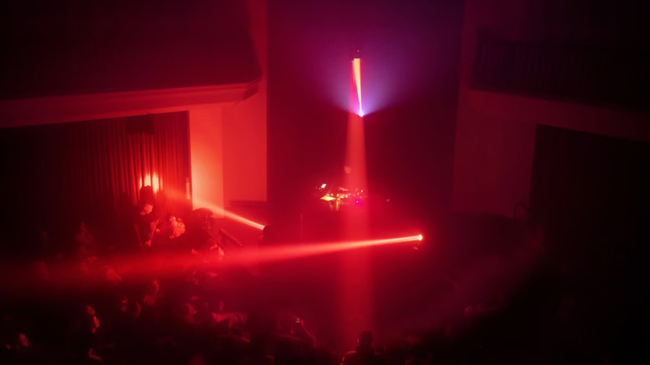
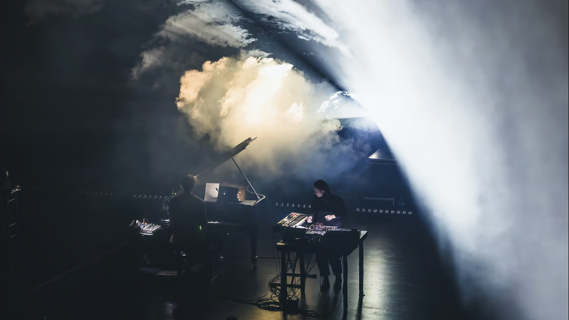

All Above - live A/V with Grand River
Music by Grand River
Live light design by Marco Ciceri
Live light design by Marco Ciceri

The All Above live show is a moving and immersive experience specifically created for the new tour. When hearing the pieces of Grand River's latest release on stage, we are immersed in an emotional experience, the vision of a sentiment, where we can witness the composer bowing to what she is dedicated and devoted to. The performance offers an enhanced listening experience compared to the album, as it features reprises that are specifically composed for the live show.




Light and visual stage design is created and performed live by Marco Ciceri, Grand River's long time collaborator. Between light and darkness, light projections, smoke and mirrors on moving engines reflecting beams of light, the show is an intangible setting for contemplation and immersion, inviting the spectator to let go.
UPCOMING SHOWS
Takeover - Athens - Greece
PAST SHOWS
Mutek - Tokyo - Japan
Sonica - Glasgow - UK
Donau Festival - Krems - Austria
Mutek - Barcelona - Spain
Pilar - Brussels - Belgium
Lunchmeat x NGP - Prague - Czech Republic
EKKO Festival - Bergen - Norway
Mutek - Mexico City - Mexico
Rum Der Forkynder - Aarus - Denmark
Mutek - Montreal - Canada
FRAC Festival - Lamezia Terme - Italy
Waking Life - Crato - Portugal
L.E.V. Festival - Gijon - Spain
Rewire Festival - The Hague - Nederlands
Silent Green - Berlin - Germany


2022